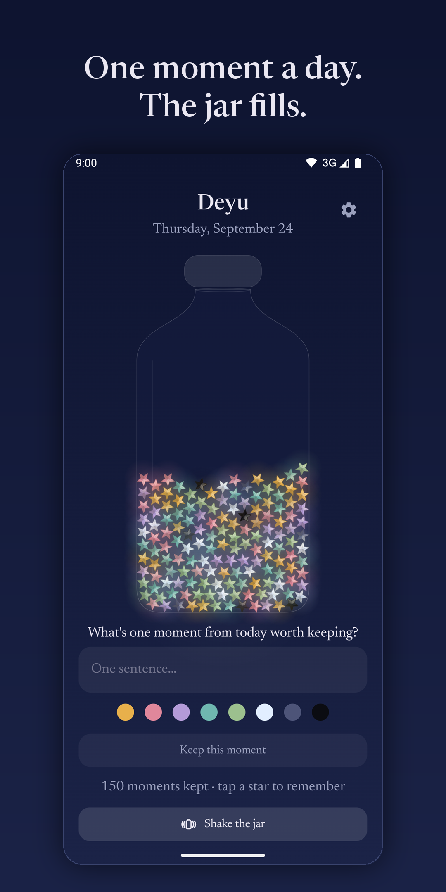
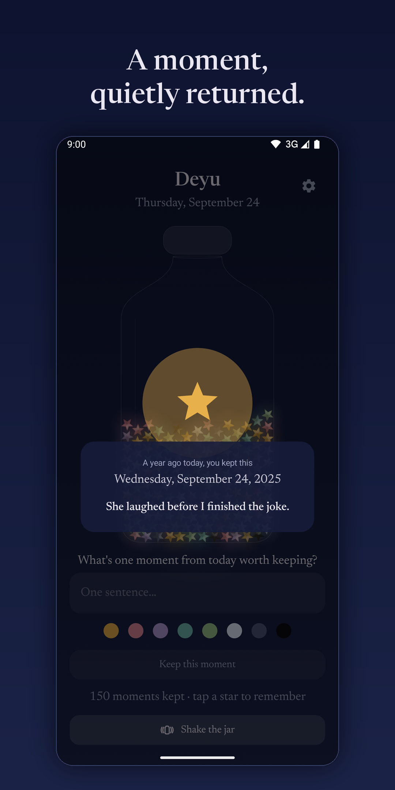
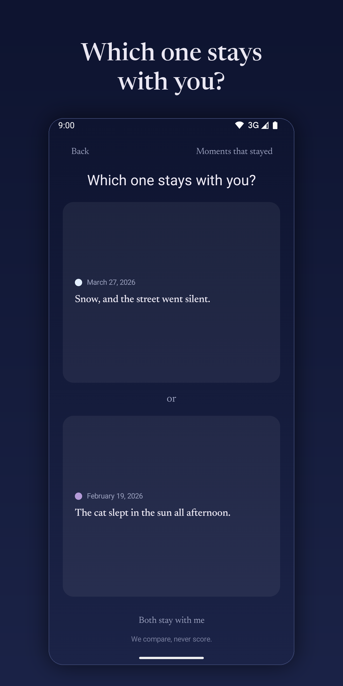

Keep one moment a day. It becomes your year.
A private memory jar for Android. One true sentence a day folds into a star and settles into a glass jar that fills over the year.



Write one sentence. Watch the jar fill. And let your moments come back to you: a week, a month, or a year on, to the day.
No account, no servers, no analytics, no ads. Everything stays on your phone: the app has no internet permission.
A quiet, optional reminder, only on days you haven't kept a moment. Nothing to keep up, nothing to lose.
A kept moment quietly comes back on its exact anniversary, so the year you lived stays close.